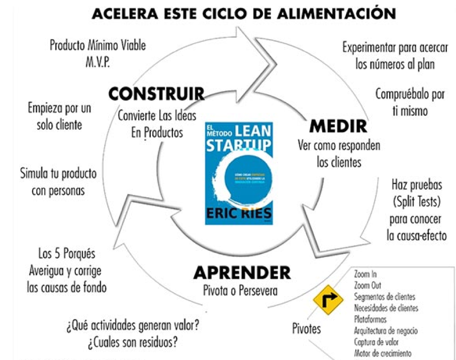
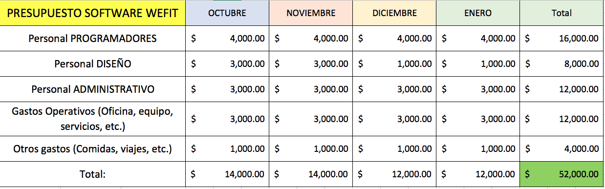

Propuesta de negocio Kevin
Descripción
Transforma tu vida transformando la de alguien más. Muchas veces la diferencia entre ir al gimnasio y
no ir es si vas solo o acompañado. En base a comentarios y experiencias personales me he dado cuenta
que en ocasiones se toma la decisión de faltar y al momento de saber que un amigo tuyo ira, cambias de
opinión. La idea es crear una app en la cual puedas tener uno o múltiples compañeros en donde comparen
sus estadísticas de cómo van y en base a las asistencias de cada quien van subiendo de nivel y van compitiendo
contra tus compañeros. También tendrás la opción de hacer equipo con personas totalmente aleatorias pero que la
app te avise cada vez que dicha persona ira a hacer ejercicio, esto con el fin de despertar el sentido natural
del ser humano de competencia y querer ser el mejor. Otra función interesante, es que podrías apostar entre tu
equipo y el que logre mantener la mejor racha se lleva la ganancia. En resumen, una herramienta que te motive a
hacer ejercicio por medio de la competencia sana y recompensas como logros y reconocimientos.
¿Cómo resuelve el problema?
Esta solución va específicamente orientado a la necesidad de obtener motivación suficiente para mantener el hábito
constante de hacer ejercicio. Lo resolverá ya que, por medio de los incentivos, trabajo en equipo, competencia y el
hecho de subir de nivel (gamificación) brindará a los usuarios una experiencia única, gratificante y divertida la
cual les generará la energía y voluntad necesaria para ser constante en el gimnasio.
Propuesta de negocio Arnulfo
Descripción:
Para solucionar el problema que se planteó, yo propondría una especie de plataforma en la que el usuario pueda
interactuar con instructores que ejemplifiquen ejercicios o rutinas que no necesiten forzosamente estar inscrito
en un gimnasio, pues se puede hacer actividad física en cualquier lugar. También considero que la parte de la
nutrición es extremadamente importante, pues hay personas que simplemente se sienten más cómodas asistiéndose de un
instructor que les indique cómo trabajar en persona, pero cualquier rutina debe estar acompañada por una dieta
balanceada que aporte los nutrientes y vitaminas necesarios para poder notar cambios a corto y largo plazo.
Sugiero que dentro de la misma aplicación se haga un apartado de nutrición, donde se puedan estar subiendo artículos
nutricionales en los que se den tips y consejos que puedan ayudar al desempeño del usuario a la hora de practicar la
parte física. Complementando a los artículos, podríamos incluir el contacto de uno o dos expertos en el área, para que
los usuarios puedan tener contacto directo y la “ayuda” sea un poco más personalizada.
¿Cómo resuelve el problema?
Con todo lo anterior, diría que el problema quedaría resuelto, pues estaríamos atacando los dos puntos más importantes
que combaten el sobrepeso y la obesidad. Con esta aplicación lograríamos que las personas lleven una vida más sana y lo
más importante, cuidando el aspecto económico y ayudar a que las personas no sientan que el estar en forma tiene que ser
a costa del bolsillo.
Propuesta Comercial
Introduccion
Nuestra app Live Fitness promete ser la aplicación para hacer ejercicio y ponerte en forma más dinámica de todas, llevando todo a un nuevo nivel para que el hacer ejercicio se vuelva divertido e incluso, emocionante. Para lograr esto, necesitamos aterrizar varias cosas sobre el proceso que conlleva realizar el desarrollo de esta. Creemos que con esta aplicación lograremos que más personas se envuelvan en el mundo del deporte, y si no, pues por lo menos lograr que los que ya están involucrados, pasen un rato agradable a la hora de hacer sus actividades.
Equipo
El equipo está conformado por un servidor, Arnulfo Gómez, y mi compañero Kevin Villa. Los dos somos estudiantes de ingeniería en sistemas computacionales a los cuales les gusta superarse y poner a prueba las habilidades que hemos aprendido hasta ahora para lograr que nuestra aplicación sea desarrollada de la mejor manera posible. Creemos que tenemos la capacidad para hacer de este, un proyecto de innovador y sobre todo, exitoso. Ambos trabajamos muy bien en conjunto, pues nos entendemos bastante bien y tenemos muy buena comunicación, lo que hace que las ideas se mantenga fluyendo.
Problema
Las aplicaciones que hay en el mercado actual para poder ser asesorado en cuestión a ejercicios y dietas, no funcionan del todo bien o son algo muy simple, lo cual no te motiva a seguir adelante y la mayoría de las personas las dejan al poco tiempo, lo cual creemos que es el problema principal, dejarlo al poco tiempo. La cuestión de que dejen el ejercicio al poco tiempo, genera un problema de desubicación emocional, en cuestión a que sienten que al no ver resultados, significa que la aplicación no sirve, y no necesariamente es eso, puede ser que solo hace falta que tenga la asesoría y diversión adecuada para poder lograr el objetivo deseado.
Objetivo Estratégico
Nuestro objetivo principal, consiste en hacer que las personas vean en nuestra app la llave o el camino a mejorar su vida. Queremos lograr que la gente realmente se “envicie” y no pueda dejar de pensar en los ejercicios que tiene que hacer, pues tiene que lograr ganarle a los demás competidores que pueden ser amigos, conocidos o gentes de otras partes del país (próximamente, del mundo). Creemos que el hecho de que haya dinero de por medio, obviamente no hablamos de cantidades abismales, harán que las personas sientan la “espinita” de querer ganar, de querer ser quien se lleve el premio mayor.
Metodología
Para poder lograr el objetivo principal, que es ofrecer una aplicación bien hecha y que cumpla con todo lo anterior, debemos seguir una metodología para que en caso de que salgan detalles, podamos resolverlos de manera rápida y sobre todo, organizada. Es por ello que optamos por tomar la filosofía de Lean Startup de Eric Ries, ya que es catalogada como una de las mejore metodologías para la creación de nuevas empresas disruptivas.

NOTA* Como forma de obtener una ventaja agregaremos un paso más al proceso de lean start up el cual es la valoración e investigación de campo. En esta etapa haremos una investigación profunda con los posibles usuarios que harán uso de la aplicación. Planeamos hacer una encuesta a todos los usuarios que son clientes potenciales del app. Para obtener resultados rápidos y que sean variados, consideramos que deberíamos encuestar arriba de 200 personas, y esto solo nos dará una aproximación, pues el nicho de mercado puede ser de varios cientos de miles. Para eso usaremos plataformas de encuesta web y probablemente usaremos las herramientas que ofrece facebook para acercarnos a las personas que consideraríamos que cumplen con los requisitos principales del cliente ideal.
Plan de implementación

Costos
Nuestro sistema de costos está en función del tamaño y complejidad de funcionalidad del proyecto. En este caso será únicamente por el tamaño del proyecto el cual se mide en las horas hombre que se le dedicarán.

Consideraciones
-Mantenimiento no está incluído.
-Incluímos tres grandes cambios mientras no involucren más del 45% del proyecto.
-Si desea no incluir el diseño en nuestro servicio hacérnoslo saber.
Persona
Análisis previo: Esta persona está basada en patrones que encontramos en redes sociales de gente que sigue cuentas de estilo fitness y que están interesadas en hacer ejercicio.
NOMBRE: Mario Fonseca
Social and demographics
-Mexicano, 25 años, soltero, clase media. Trabaja tiempo completo, educación completa
Needs, desires, goals
-Es una persona muy competitiva, le gusta divertirse, le gusta ser reconocido ante los demás.
Habits (consumer habits, behavior)
-Una persona muy perseverante, fiestera, le gusta hacer cosas nuevas.
Expertise
-El ejercicio es una gran pasión para el, porque conoce mucho de todos los temas relacionados como por ejemplo nutrición, fisiología y ejercicios.
Cultural background
-Familia mexicana de ciudad, carácter fuerte, una persona directa que es honesta y hará lo posible por ganar siempre.
Motivations
-Una de sus principales motivaciones es la felicidad. Se preocupa mucho por su capacidad física y lo que lo motiva más es el hecho de ser mejor.
Must do, Never Do
-Do`s: Siempre darle las cosas directamente al grano y sencillas.
-Don`t`s: Hacer la app muy compleja.
User experience goals
Debe de tener una interfaz muy dinámica, pero a la vez sencilla, que jamás confunda al usuario y siempre este presente la información necesaria para que el usuario no tenga absolutamente ninguna duda y a la vez se sienta en un sistema dinámico y divertido de usar.